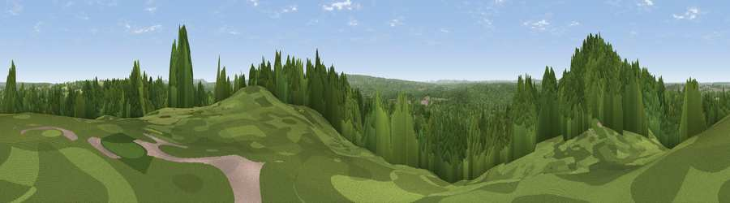

Viewpoint near Runfold
#35773 in England · top 33% of its area beats it · near RunfoldWhere it is
The exact computed spot (SU 88175 45825). Click the marker for map links.
The view, rendered

A 360° render of this exact spot computed from the terrain model, tree cover and land cover — summer colours, afternoon light, calibrated against photographs of famous viewpoints. Real trees, hedges and buildings will differ in detail.
The panorama
Grey silhouette: terrain skyline in each direction (720 bearings, Earth curvature and refraction included). Dashed green: skyline with trees (+15 m) and buildings (+8 m) as obstacles. Blue strip: how far the ground is visible on each bearing.
Where the view opens
Wedge length = distance to the farthest visible ground on that bearing (vegetation-aware). Rings at 10, 25 and 50 km.
What fills the view
77% woodland · 17% grassland · 3% cropland · 3% built-up
Angular shares of the visible panorama (visual magnitude), not map area. Landscape diversity 0.31 (0–1 Shannon).
Key numbers
More beautiful places nearby
The staircase of upgrades: each row has a higher view potential than everything closer. Driving times are estimates from straight-line distance, calibrated against real road routing — check an actual route before setting out.
| Place | Direction | Drive | Score |
|---|---|---|---|
| Viewpoint near Runfold | WNW · 0 km | ~1 min | 46.1 |
| Viewpoint near Puttenham | NE · 4 km | ~9 min | 46.3 |
| Viewpoint near Upper Hale | NW · 6 km | ~13 min | 46.8 |
| Viewpoint near Wanborough | ENE · 7 km | ~14 min | 48.1 |
| Viewpoint near Compton | ENE · 8 km | ~17 min | 49.4 |
| Viewpoint near Hindhead | S · 9 km | ~18 min | 54.5 |
| Temple of the Four Winds | SSE · 10 km | ~20 min | 65.4 |
| Viewpoint near Fernhurst | SSE · 17 km | ~30 min | 75.1 |
51.20484, -0.73923 · source: screening · position refined by local search. Computed location — check access rights before visiting.